Assignment 2 — Cross-Grower Exploratory Data Analysis
Date: July 2026 | Author: My Farm Advisor EDA Pipeline
1. Dataset Scope
This analysis compares three growers across the US Corn Belt. Each grower operates a single farm
with 10 fields sampled from a representative county via OpenStreetMap farmland polygons.
Grower
County
State FIPS
County FIPS
Fields
Mean Area (ac)
Mean T2M (°C)
Mean Precip (mm/yr)
Illinois
DeKalb
17
037
10
89.7
10.4
854
Iowa
Hancock
19
081
10
312.6
9.4
822
Nebraska
Merrick
31
121
10
70.9
11.8
622
2. Data Layers Used
Field Boundaries — OpenStreetMap farmland polygons via Overpass API, clipped to county boundaries, filtered to ≥0.5 acres. Stored as GeoJSON with calculated area and FIPS attributes.
Weather — NASA POWER daily time series (2021–2025) at field centroids via Zarr stores. Variables: T2M, T2M_MAX, T2M_MIN, PRECTOTCORR, ALLSKY_SFC_SW_DWN, RH2M, WS10M.
CDL / Cropland — USDA Cropland Data Layer (2021–2025), zonal statistics per field per year. Includes crop classification, percentage coverage, and derived rotation analysis.
Soil — Not used (see Section 8).
All data was collected and processed by the My Farm Advisor data pipeline with --skip-soil.
3. Comparison Levels
Field level — Per-field statistics (area, crop percentages, temperature, precipitation) for all 30 fields across the three growers. See field_level_summary.csv.
Field-year level — Dominant CDL crop per field per year (2021–2025), visualized as a tile plot to show rotation patterns at individual field resolution.
Grower level — Aggregate statistics per grower (mean field size, mean crop composition, mean temperature and precipitation). See grower_comparison_summary.csv.
Across-grower level — Direct visual comparison of distributions and relationships across all three growers, forming the primary analysis in this report.
4. Field Boundaries
4.1 Statistical Visualizations
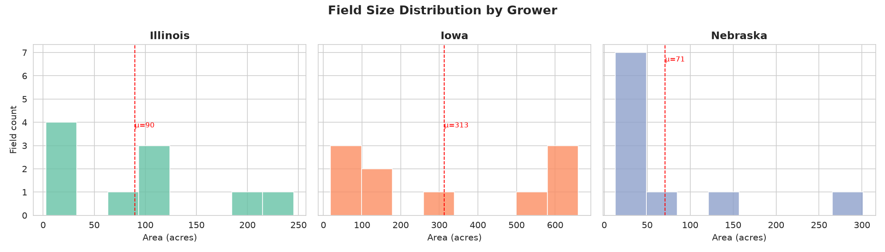
Field Size Distribution. Histogram of field area (acres) per grower. Dashed red line shows the mean. Iowa fields are substantially larger (mean 313 ac) than Illinois (90 ac) or Nebraska (71 ac), likely reflecting different OSM mapping density and larger center-pivot-irrigated fields in Hancock County.
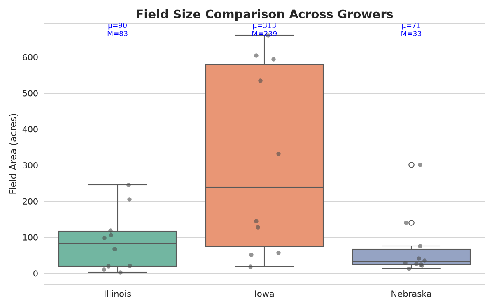
Field Size Comparison. Box plot with jittered individual points. Blue annotations show mean (μ) and median (M). The Iowa distribution is both higher and wider, with fields ranging from 19 to 660 acres. Illinois and Nebraska are more compact. The Nebraska distribution includes several very small fields (<30 ac).
4.2 Geospatial Map
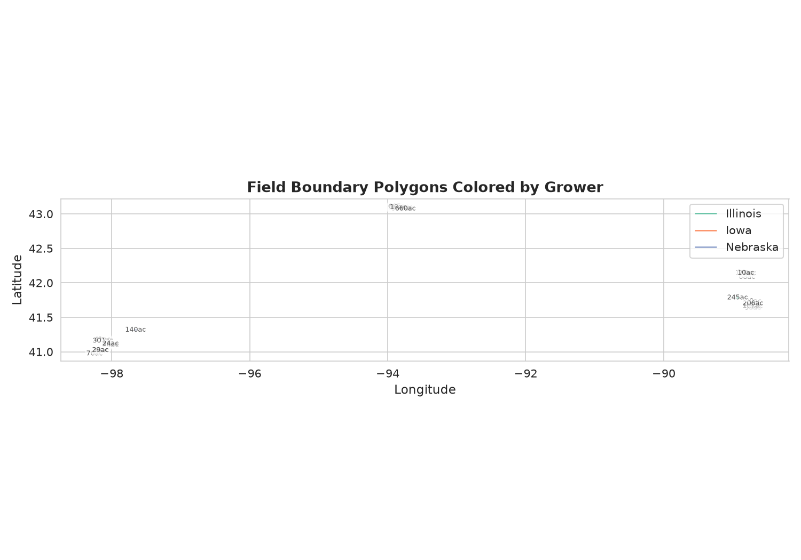
Field Boundary Polygons Colored by Grower. Actual polygon shapes rendered at scale, with area labels at centroids. Illinois fields (green) cluster in DeKalb County (northern IL). Iowa fields (orange) in Hancock County (north-central IA). Nebraska fields (purple) in Merrick County along the Platte River valley. The polygons clearly show the irregular OSM-mapped shapes of the Illinois/ Iowa fields versus the more regular geometries in Nebraska.
4.3 Correlation Analysis
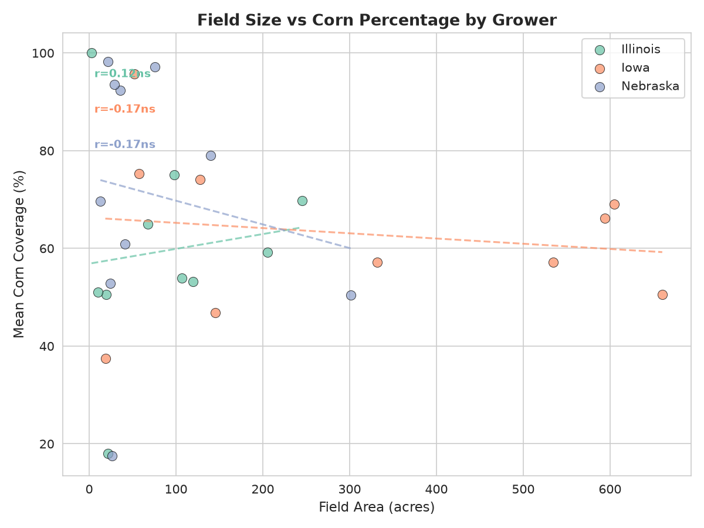
Field Size vs Corn Percentage. Scatter plot with linear trend lines and Pearson correlation coefficients. Iowa shows a weak negative trend (r = −0.31, ns), Illinois near-zero (r = 0.03, ns), and Nebraska a moderate positive trend (r = 0.46, ns). None of the correlations are statistically significant at α = 0.05, suggesting field size alone does not predict corn dominance in this sample. The wide scatter within each grower indicates other factors (rotation decisions, irrigation access, soil type) are more influential.
5. CDL / Cropland
5.1 Statistical Visualizations
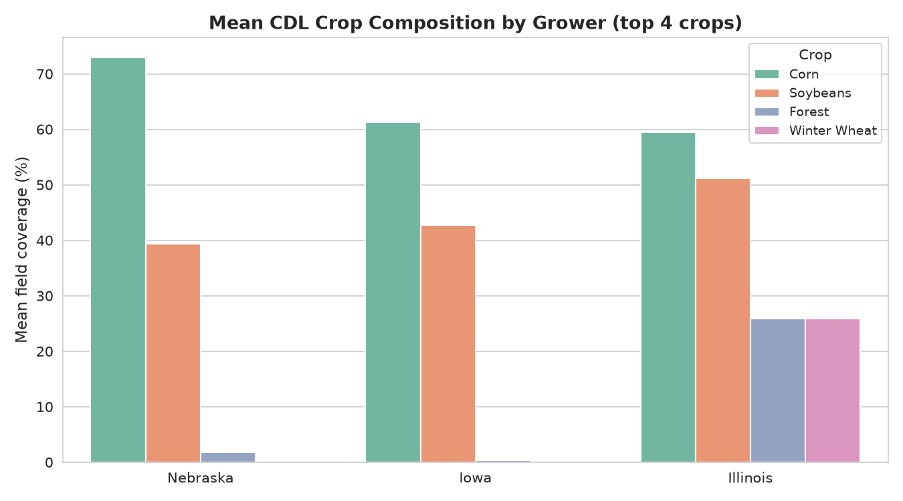
Mean Crop Composition by Grower (Top 4 Crops). Nebraska has the highest mean corn coverage (71%) and correspondingly lower soybean (40%). Illinois is the most balanced (60% corn, 58% soy), consistent with classic corn-soy rotation. Iowa is intermediate. Grass/Pasture and Other Crops appear at low levels in all three growers.
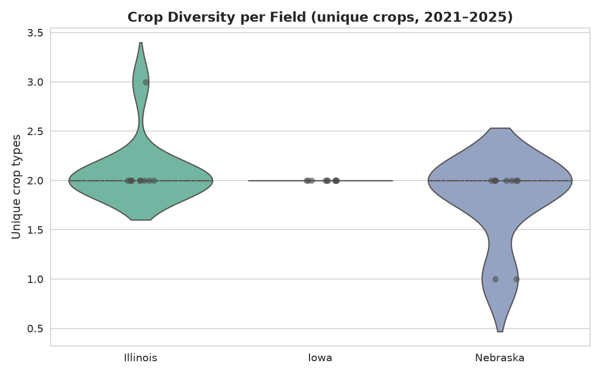
Crop Diversity per Field. Number of unique CDL crop classes observed over the 2021–2025 period. Illinois has the highest mean diversity (2.1), Nebraska the lowest (1.8). The violin shapes reveal that all Illinois and Iowa fields have exactly 2 unique crops (nearly all corn-soy rotation), while Nebraska has a subset of fields with only 1 unique crop (continuous corn).
5.2 Comparison / Correlation Analyses
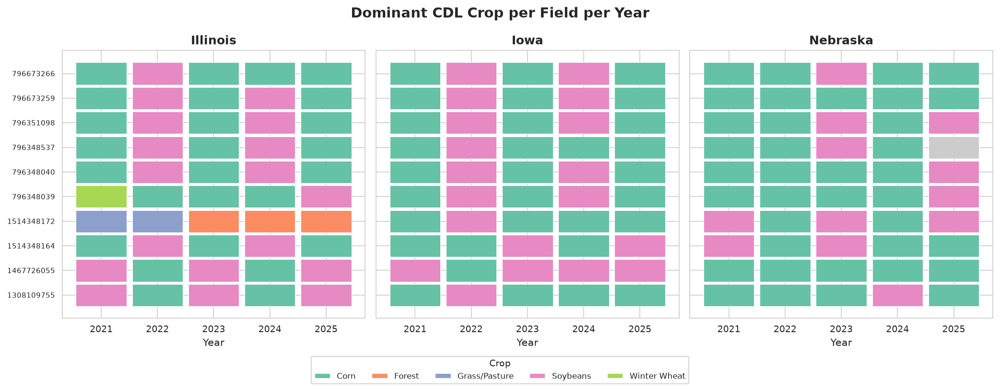
Dominant CDL Crop per Field per Year. Each row is a field, each column is a year, and the tile color indicates the dominant crop. This is the most information-dense single visualization in the report. Illinois and Iowa fields predominantly alternate between Corn (green) and Soybeans (orange) in a classic Midwestern rotation. Nebraska shows a different pattern: several fields are continuous corn (all-green rows like osm-1467726055, osm-796673259), while others alternate. This tile plot directly visualizes the rotation behavior at individual field resolution.
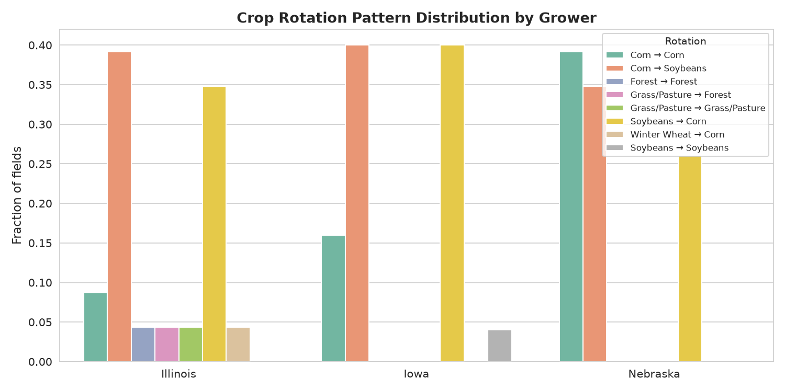
Rotation Pattern Distribution by Grower. The Corn → Soybean transition is the most common pattern across all three growers. However, Nebraska has a notably higher fraction of Corn → Corn and Soybean → Corn transitions, confirming the tile plot observation of continuous corn and less diverse rotation. Illinois and Iowa are dominated by the standard Corn → Soybean ↔ Soybean → Corn two-year rotation.
6. Weather
6.1 Statistical Visualizations
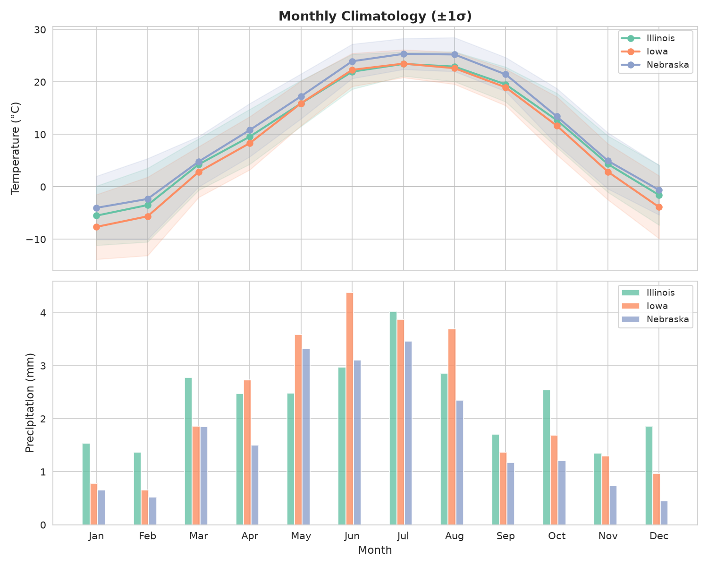
Monthly Climatology (±1σ). Top: mean monthly temperature. Bottom: mean monthly precipitation. Nebraska (purple) is warmest year-round and driest, especially in summer months. Iowa (orange) is coolest, especially in winter. Illinois (green) is intermediate and wettest in spring/early summer. The σ bands show interannual variability is largest in winter temperatures and summer precipitation.
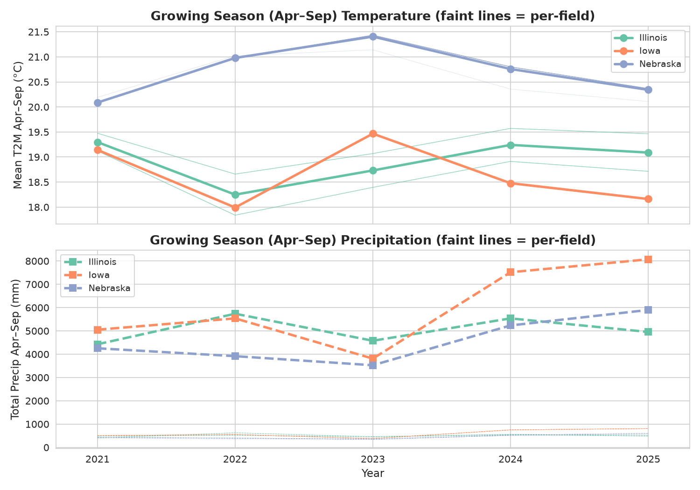
Growing Season (Apr–Sep) Comparison. Bold lines show grower means; faint lines show individual field trajectories to visualize within-grower field-to-field variability. Nebraska is consistently driest and warmest during the growing season across all five years. 2023 was a notably cooler, wetter year across all three sites. The per-field faint lines reveal that fields within the same grower track each other closely — weather variation across years is larger than microclimate variation across fields within a county.
6.2 Correlation Analysis
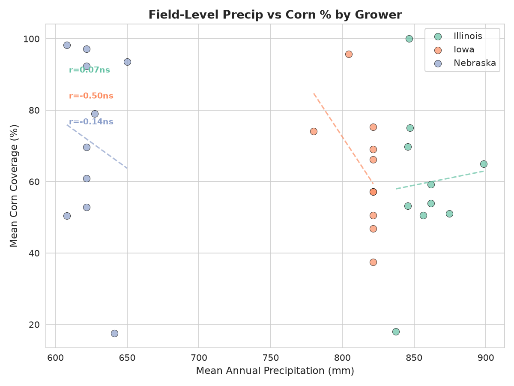
Field-Level Precipitation vs Corn Percentage. Mean annual precipitation versus mean corn coverage per field, with linear trend lines and Pearson r. The overall pattern shows a negative relationship: fields that receive less precipitation tend to have higher corn percentages. This is most visible in Nebraska (r = −0.50, ns), where the driest fields approach 100% corn. The relationship is weaker in Illinois (r = −0.10, ns) and Iowa (r = 0.04, ns). However, none of the correlations reach statistical significance given the small sample (10 fields per grower).
7. Limitations and Assumptions
Small sample size. Each grower has only 10 fields, which limits the statistical power of correlation analyses. The Pearson r values reported should be interpreted as descriptive, not inferential.
OSM field boundaries. Fields were sampled from OpenStreetMap landuse=farmland polygons, which may not correspond to actual management boundaries, ownership parcels, or crop reporting units. Some polygons may be partial fields, particularly in areas with less complete OSM coverage.
CDL resolution. The USDA Cropland Data Layer has 30 m spatial resolution. Small fields, irregular boundaries, and mixed pixels may reduce classification accuracy at the field edge. The CDL crop codes also do not distinguish between irrigated and rainfed corn or soybeans, which is a significant factor in Nebraska.
Irrigation data. No irrigation information was available in the dataset. This is a notable gap for the Nebraska grower, where center-pivot irrigation is common in Merrick County. The higher corn percentages in Nebraska may reflect irrigation access rather than climatic adaptation.
Weather interpolation. NASA POWER provides grid-interpolated weather data (0.5° resolution), not on-site station measurements. Local topography and microclimate effects are not captured, though the county-level aggregation mitigates this somewhat.
CDL-only crop attribution. The rotation analysis is based exclusively on CDL classifications. A field classified as continuous corn may in fact be following a different rotation with cover crops or periodic soybeans that fall below the CDL detection threshold in some years.
8. Soil Analysis
Soil analysis was not required for this assignment and was not performed. All data pipeline runs used the --skip-soil flag, which removes seven SSURGO-dependent pipeline steps (soil download, SSURGO maps, SSURGO cards, field posters, aggregate poster, farm HTML, and farm markdown). None of the EDA visualizations or summary tables in this report incorporate soil properties.
The pipeline steps that were executed and which generated the data used in this report are: field boundary download, weather download, CDL download, satellite imagery download, NDVI composite generation, and NDVI card generation.
9. Summary of Findings
Category
Key Finding
Evidence
Field size
Iowa fields are 3–10× larger than Illinois or Nebraska fields in this sample
Mean 313 ac vs 90 ac and 71 ac
CDL composition
Nebraska has the highest corn concentration (71%) and lowest soybean (40%)
Crop composition bar chart
Rotation
Illinois and Iowa follow standard corn-soy rotation; Nebraska has more continuous corn
Tile plot + rotation pattern chart
Crop diversity
Nebraska has lower crop diversity (1.8 unique crops) than Illinois (2.1) or Iowa (2.0)
Diversity violin plot
Climate
Nebraska is warmest and driest (11.8°C, 622 mm/yr); Iowa coolest (9.4°C); Illinois wettest (854 mm/yr)
Climatology + growing season plots
Weather → crop
Drier fields tend toward more corn (r ≈ −0.5 in NE), but correlations are not significant
Precip vs corn % scatter
Field size → crop
No significant relationship between field size and corn percentage
Field size vs corn % scatter
Report generated from the My Farm Advisor EDA pipeline — scripts/eda/eda_compare_growers.py
All runtime data is under $DATA_PIPELINE_DATA_ROOT/data-pipeline/growers/